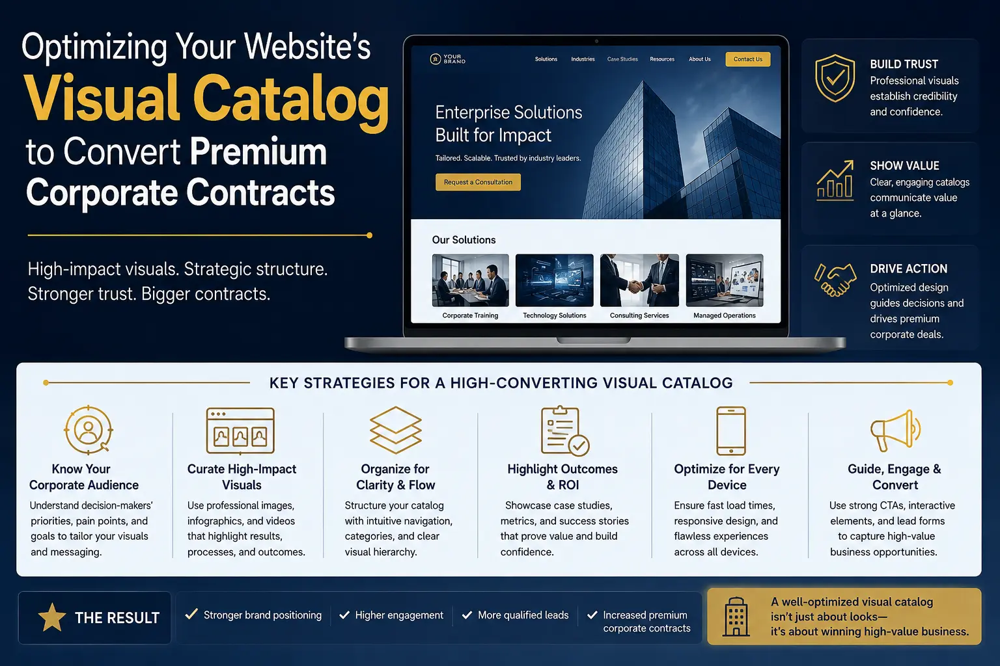
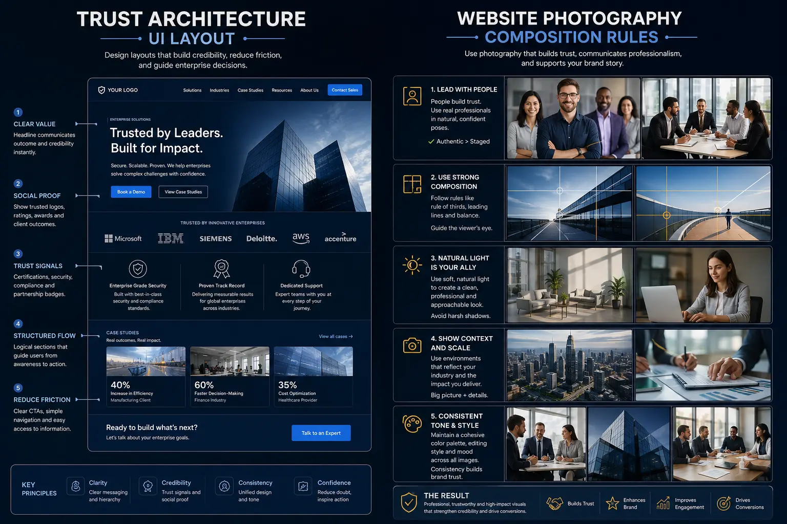
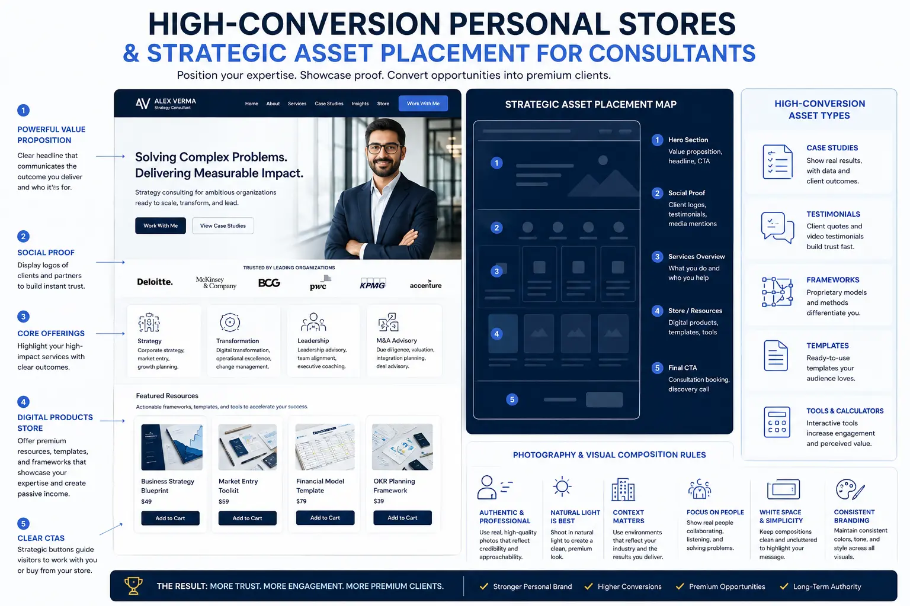

Optimizing Your Website's Visual Catalog to Convert Premium Corporate Contracts
The Enterprise Digital Shift: Trust Precedes Contact
The modern corporate purchasing landscape has fundamentally shifted. Enterprise buyers, procurement officers, and senior executives no longer rely solely on slide decks, cold pitches, or offline RFPs. Instead, they perform an intensive, silent digital audit of potential partners before ever initiating contact. The moment an enterprise lead lands on a personal brand or consulting website, a visual evaluation begins. The layout, style, and structure of your online presence will immediately establish whether you operate at an enterprise level or if you are simply a generic service provider. To win these high-ticket engagements, businesses must move away from template structures and invest in high-quality Designing high-converting personal websites. This involves treating the website not just as an online resume, but as a polished, interactive, and premium catalog that displays expert capability.
To influence risk-averse corporate buyers, your website must function as a visual showroom. This requires professional Website & Catalog Visual Production to create custom visual assets that communicate authority and precision. Standard stock photos and chaotic layouts will trigger immediate skepticism. Every visual element—from headshots to charts—must be custom-designed to match your brand's positioning. By treating your website as a premium digital catalog, you can guide buyers through your services and address their concerns before a meeting is even scheduled. This visual clarity is the baseline requirement for converting high-ticket traffic and positioning your business for premium corporate contracts.
converting high-ticket traffic requires a deep understanding of corporate buyer psychology. These buyers are looking for validation, security, and proven outcomes. They want to know if you have successfully managed enterprise projects before. A website that is disorganized or lacks clear visual proof will raise immediate red flags. In contrast, a site built as one of many High-Conversion Personal Stores presents services as clear, structured, and high-value programs. When you present your offerings with the same professionalism as high-end consumer products, you reduce buyer friction and make it easy for corporate stakeholders to justify a premium investment.
Implementing the Trust Architecture UI Layout
The core of a high-converting storefront is a robust Trust Architecture UI Layout. This layout is a user interface system designed to highlight credibility, authority, and verification indicators at key points of the user journey. By placing trust elements—such as client logos, certifications, and results metrics—along the natural scanning paths of visitors, a Trust Architecture UI Layout addresses buyer concerns immediately. Placing a band of recognized enterprise client logos directly below the hero section, for instance, confirms your capabilities within seconds. This visual structure is essential for building confidence and encouraging visitors to take action.
When structuring a Trust Architecture UI Layout, you must pay close attention to the visual hierarchy. Start with a clear and compelling value proposition at the top of the page, supported by a professional, high-resolution hero image. As the user scrolls, they should encounter structured proof points, such as case studies and testimonials, that validate your claims. In the context of Designing high-converting personal websites, this strategic layout structure is what converts passive visitors into active leads. By organizing information logically and visually, you help corporate buyers understand your unique value and feel confident in your services.
A key aspect of a successful Trust Architecture UI Layout is the integration of verified results and data points. Rather than making general claims, use visual charts, graphs, and statistics to demonstrate the impact of your work. Displaying these metrics in a clean, professional format reinforces your authority and shows that your services deliver measurable business value. This data-driven approach is a key differentiator when targeting enterprise clients, who prioritize return on investment and risk management.
Ultimately, a Trust Architecture UI Layout is designed to turn your website into one of the most effective High-Conversion Personal Stores in your industry. By structuring your user interface to highlight trust, capability, and validation, you build a powerful tool that works in the background to pre-qualify leads and build credibility. When corporate decision-makers see a professionally designed, trust-focused layout, they are far more likely to initiate discussions for premium contracts.
Instant Enterprise Trust
A polished Trust Architecture UI Layout communicates professional capability to risk-averse corporate buyers immediately, establishing the baseline credibility required to convert high-ticket storefront visits.
Strategic Conversion Paths
Using strategic asset placement for consultants ensures that key assets like outcome charts and testimonials are aligned with scanning patterns, naturally guiding prospects from discovery to contract discussion.
Compelling Proof Systems
Transforming text-heavy portfolios into engaging visual case studies for business allows corporate buyers to quickly grasp challenge, solution, and outcome, reducing friction in their evaluation process.
Cohesive Visual Presence
By executing professional brand visibility blueprints and investing in Website & Catalog Visual Production, you maintain visual consistency across all digital touchpoints, cementing your industry authority.

Website Photography Composition Rules: Establishing Human Authority
The human element is the foundation of any personal brand. However, using generic stock images can quickly damage your credibility. Corporate buyers can spot stock photography instantly, and it often suggests that a business lacks authentic experience. To attract premium corporate contracts, consultants must use professional brand photography that follows clear website photography composition rules. These rules ensure that all brand images look professional, authentic, and intentional, supporting your high-end positioning.
First, your brand images must feature high-resolution, professionally composed headshots and working-shots in real environments. Second, they must use negative space strategically to allow visual breathing room and clean areas for text overlays. This is a critical guideline for Designing high-converting personal websites, ensuring that your copy remains easy to read. Third, the subject's gaze in the photo should be directed toward your primary calls-to-action or value propositions. Because website visitors naturally follow the gaze of others, this subtle cue guides attention to key sections of the page. Finally, maintaining color and lighting harmony between your photos and the brand's styling creates a professional and cohesive appearance. By applying these website photography composition rules, you elevate the look of your site and build a cohesive visual experience that supports Website & Catalog Visual Production standards.
Professional photography is not just about looking good; it is about telling a story of capability and approachability. Showing you in action—whether leading a team meeting, presenting at a conference, or working in a modern office environment—provides context to your services. It allows corporate buyers to visualize you working within their organization, reducing the perceived risk of hiring you. Investing in high-quality visual content is an essential step in building one of many successful High-Conversion Personal Stores.
Visual Case Studies vs. Standard Portfolios
Traditional portfolios that rely on long, dense paragraphs of text are rarely read by busy corporate buyers. To capture attention and build authority, modern websites must utilize visual case studies for business. These case studies convert complex project histories into clean, engaging visual narratives. By using results charts, project timelines, process flowcharts, and video testimonials, you can communicate your success and capabilities in seconds.
A strong visual case study shows the client's challenge, your structured solution, and the measurable business outcome. Highlighting key results—such as revenue growth, cost savings, or efficiency gains—in bold, clear typography ensures that even scanning visitors can grasp your impact. This visual approach is a powerful tool for High-Conversion Personal Stores, turning past successes into active marketing assets. When corporate buyers see clear visual proof of how you solved a similar problem for another enterprise, they can easily visualize you doing the same for them. Integrating visual case studies for business is a proven method for building trust and securing high-value contracts.
By formatting your client successes visually, you also make them shareable. A procurement officer or project sponsor can easily take a screenshot of your visual case study or download a PDF version to share with internal stakeholders during decision-making meetings. This ease of distribution is critical in the B2B space, where multiple decision-makers are involved. Providing clear, visual proof of your value makes it easier for your champions within the target organization to pitch your services.
Designing these assets requires a blend of graphic design and data visualization skills. Every chart must be clear, labeled, and easy to interpret. The color scheme of the visuals should match your brand guidelines, maintaining consistency. When you invest in high-quality Website & Catalog Visual Production for your case studies, you create a powerful asset that helps in converting high-ticket traffic and closing premium contracts.
Strategic Asset Placement for Consultants
Simply having high-quality visual assets is not enough; their placement on the page is equally important. This is where strategic asset placement for consultants comes in. By analyzing how corporate buyers scan web pages, you can place key decision-making assets where they will have the most impact. For example, eye-tracking research shows that web users often scan in F-shaped or Z-shaped patterns. Placing your most impressive results charts, client logos, and value propositions along these scanning paths ensures they are noticed.
Applying strategic asset placement for consultants means positioning your primary call-to-action in a high-visibility container with clear visual hierarchy. You must ensure that visitors are guided through a structured narrative that builds trust as they scroll. When paired with a Trust Architecture UI Layout, strategic placement ensures that every section of the page reinforces your authority. This deliberate design approach is key to creating High-Conversion Personal Stores that consistently turn visitors into qualified leads.
When planning your layout, consider the balance between visual elements and text. Too much text can overwhelm the visitor, while too many visuals without context can appear unprofessional. Use clean spacing and clear headings to guide the reader through the content. By aligning your design with the natural scanning patterns of corporate buyers, you create a user experience that feels intuitive and professional.
CMS Infrastructure
Select a modern CMS that supports clean styling, fast loading times, and the flexibility needed for Designing high-converting personal websites that engage corporate decision-makers.
Fast Asset Delivery
Utilize CDN networks to deliver high-resolution assets from your Website & Catalog Visual Production library instantly, keeping bounce rates low and engagement high.
Performance Optimization
Integrate robust analytics to monitor visual engagement, tracking how visitors interact with your visual case studies for business and CTAs, ensuring ongoing growth.

Executing Brand Visibility Blueprints
To consistently convert premium corporate contracts, you must maintain a unified visual identity across all digital platforms. This is achieved by creating and executing brand visibility blueprints. These blueprints define how your visual identity, color schemes, typography, and messaging are applied across your website, social media profiles, and external articles. Consistency is essential for building a recognizable, trusted brand in the enterprise space.
When a corporate buyer transitions from your LinkedIn content to your website, the visual experience should feel seamless and cohesive. A mismatched online presence can create confusion and erode trust. By following your brand visibility blueprints, you ensure that every touchpoint reinforces your professional positioning. Leveraging professional Website & Catalog Visual Production standards across all channels helps you maintain this consistency. A unified brand identity builds authority and makes your business stand out to high-value corporate clients.
An effective blueprint also covers how you present your services in offline documents, such as proposals and presentation decks. Using the same fonts, colors, and visual styles in your digital and print materials creates a cohesive brand experience that reinforces your professionalism. By establishing strict brand standards and following them across all channels, you build a recognizable and trusted brand that appeals to premium corporate clients.
Ultimately, optimizing your website's visual catalog is about building a valuable, independent business asset. By combining a Trust Architecture UI Layout, professional photography, and visual case studies, you create a powerful storefront that works in the background to attract and qualify leads. This systematic approach is essential for scaling your services and securing high-margin corporate engagements.
Detailed 90-Day Visual Optimization Roadmap
Transitioning your website to a premium corporate storefront requires a structured, phase-by-phase approach to protect your cash flow and manage resources effectively. Here is a 90-day execution roadmap:
- Phase 1: Visual Audit & Strategy Planning (Days 1-30): Begin by auditing all existing visual assets, layouts, and case studies on your site. Identify gaps in your current presentation and align them with your brand visibility blueprints. Design the framework for your new Trust Architecture UI Layout, determining where to place client logos and results data.
- Phase 2: Content Creation & Photography (Days 31-60): Schedule professional photography sessions that follow the website photography composition rules. Draft and design your new visual case studies for business, converting text-heavy portfolios into visual narratives. Invest in high-quality Website & Catalog Visual Production for all key offerings.
- Phase 3: Integration, Testing & Launch (Days 61-90): Integrate the new visual assets and layouts into your CMS. Apply strategic asset placement for consultants to optimize the user journey. Set up tracking and analytics tools to monitor visitor behavior and ensure that all pages load quickly. Launch the updated catalog and begin converting high-ticket traffic.
Frequently Asked Questions
1. What is a trust architecture UI layout and how does it convert premium corporate contracts?
A trust architecture UI layout is a strategically designed user interface that prioritizes the display of credibility, capability, and validation indicators to convert high-ticket storefront traffic. For consultants and premium service providers, this means placing client testimonials, corporate case study statistics, media citations, and professional certifications at high-visibility sections on the storefront. By providing immediate visual proof of authority, the page addresses corporate buyer skepticism and encourages them to initiate discussions for premium contracts.
2. How does strategic asset placement for consultants optimize high-conversion personal stores?
Strategic asset placement optimizes high-conversion storefronts by positioning key decision-making assets (like case studies, result charts, service tiers, and CTA buttons) along the natural visual scanning paths of visitors. By mapping where visitors look first and placing authoritative proof-points there, you reduce friction, build trust quickly, and make it easy for potential clients to understand your value and take the next step.
3. What are the website photography composition rules for business websites?
The website photography composition rules include: first, always use high-resolution, professionally composed headshots and working-shots that match your premium positioning; second, utilize negative space to allow visual breathing room and integrate text overlays; third, align the subject's gaze direction toward your primary calls-to-action to naturally guide visitor attention; and fourth, maintain color and lighting harmony with your brand styling. Following these rules ensures your storefront looks professional and cohesive.
4. Why are visual case studies for business superior to traditional portfolios?
Visual case studies are superior because they transform long, text-heavy success stories into engaging visual narratives featuring results charts, project timelines, workflow diagrams, and client video segments. Corporate buyers scanning a page can understand the challenge, solution, and business outcome in seconds, making your expertise immediately clear and convincing.
Key Topics
Ready to Optimize Your Visual Storefront for Premium Corporate Contracts?
At The PhD Ads in Madurai, we specialize in helping elite consultants, service providers, and business leaders scale their authority and capture high-value enterprise engagements. From professional Website & Catalog Visual Production and custom brand visibility blueprints to building a high-performing Trust Architecture UI Layout and mapping out strategic asset placement for consultants, we provide the comprehensive design and marketing services needed to stand out. Let us help you transform your website into one of the leading High-Conversion Personal Stores in your niche.
Email: team@e2o.in